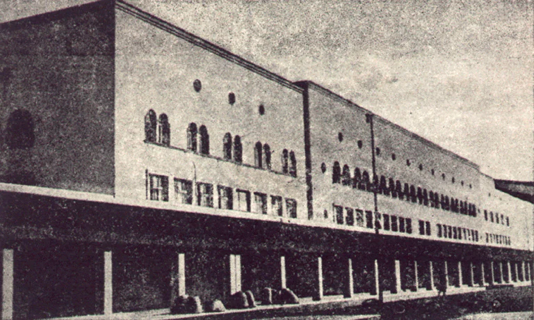
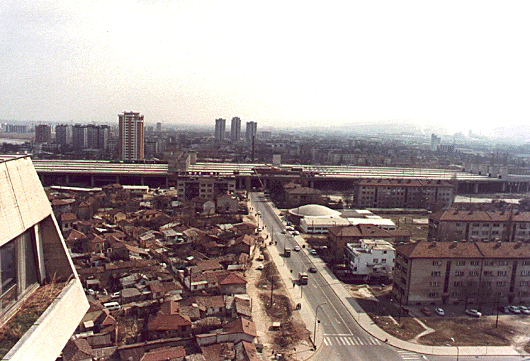

Возот пристигнува
- Сценарио и режија
- Трајче Попов
- Снимател
- Бранко Михајловски
- Година
- 1951
- Должина
- 00:09

Старата железничка станица од крајот на 19 век. Изградена е во 1873 година за време на Отоманската империја. На разгледницата се гледа главниот влез на железничката станица, а одзади се наоѓале железничките линии. Архитектурата е со белези на неокласичен манир. Во преден план е продавачка на млечни производи.

Старата железничка станица од крајот на 19 век. Изградена е во 1873 година за време на Отоманската империја. На разгледницата се гледа главниот влез на железничката станица, а одзади се наоѓале железничките линии. Архитектурата е со белези на неокласичен манир.

Првата железничка станица. Фотографирана од задната страна. (почеток на 20 век)

Старата железничка станица, од задната страна. (почеток на 20 век)

"Новата железничка станица" - започнала да се гради 1937 година. На 1 Декември 1940 година била предадена во употреба, иако перонот бил недоизграден и работите околу обликувањето на столбовите биле недовршени. Се одликува со примена на модерни облици и интерпретација на византиски, романтичарски и фолклорни облици. За време на катастрофалниот земјотрес на 26 Јули 1963 год, 2/3 од неа се срушиле. Останатата 1/3 е санирана и во неа сместен денешниот Музеј на град Скопје. Денеска овој објект е споменик на катастрофалниот земјотрес од 26 Јули 1963 год. Застанатиот часовник над влезот на Музејот на град Скопје го покажува времето од 05 часот и 17 минути, трагичниот момент од 26 Јули 1963 год.

Железничката станица за време на Втората светска војна.

Железничката станица после Втората светска војна (денешниот Музеј на град Скопје), од страната на главниот влез.

Железничката станица после Втората светска војна (денешниот Музеј на град Скопје), од страна на пероните.

Перонот на железничката станица - 1940 година.

Железничката станица во изградба - фотографирана од задната страна - 40-тите години.

Железничката станица во изградба - фотографирана од предната страна - 40-тите години.

Колажна разгледница на која, преку четири фотографии, е преставен историјатот на железничките станици во Скопје.

Новиот транспортен центар. (80-тите години)


 Аквадукт4 разгледници
Аквадукт4 разгледници Кале30 разгледници
Кале30 разгледници Мостови60 разгледници
Мостови60 разгледници Кеј58 разгледници
Кеј58 разгледници Плоштад46 разгледници
Плоштад46 разгледници Објекти66 разгледници
Објекти66 разгледници Христијански храмови19 разгледници
Христијански храмови19 разгледници Муслимански објекти33 разгледници
Муслимански објекти33 разгледници Офицерски дом29 разгледници
Офицерски дом29 разгледници Театар28 разгледници
Театар28 разгледници Железничка станица13 разгледници
Железничка станица13 разгледници Училишта36 разгледници
Училишта36 разгледници Паркови12 разгледници
Паркови12 разгледници Пазари18 разгледници
Пазари18 разгледници Улици38 разгледници
Улици38 разгледници Панорама I60 разгледници
Панорама I60 разгледници Панорама II30 разгледници
Панорама II30 разгледници Колажи55 разгледници
Колажи55 разгледници Поплави9 разгледници
Поплави9 разгледници Земјотрес27 разгледници
Земјотрес27 разгледници Скопје 200026 разгледници
Скопје 200026 разгледници